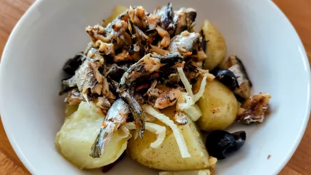

Grilled harissa sardines with fennel & potato salad
50 mins
Serves 6

Pair sardines with harissa to make this fabulous summer salad with fennel, olives and new potatoes. The freshness of the fennel really balances the richness of the fish
Ingredients
900g new potatoes
2bulbs fennel
½
lemon, juiced
24small good-quality black olives
5tbsp extra virgin olive oil
For the sardines
12
sardines, cleaned and gutted
4tbsp olive oil
harissa
2
lemons, 1 juiced, 1 cut into wedges to serve
3tbsp chopped parsley
Instructions
Cook the potatoes in boiling salted water until tender, about 15-20 mins. While they're cooking, remove any tough outer leaves from the fennel and trim the tops, keeping any feathery fronds. Halve lengthways and remove the little hard core from each piece and discard. Cut the fennel into very fine slices using a mandoline or a sharp knife. Put them in a bowl and squeeze over the lemon juice. When the potatoes are tender, drain well and toss with the fennel, olives, extra virgin olive oil, some seasoning and the reserved fronds.
If the sardines haven't been scaled, remove by hand under running water, then wash out traces of blood from the inside and dry with kitchen paper.
Heat the grill. Mix the oil with the harissa. Put the sardines on a grill tray covered with foil. Brush them with the harissa oil (on both sides), season with salt and put under a very hot grill and cook for 4-5 mins each side, or until cooked through. Pour over the lemon juice and scatter with the parsley. Serve on the fennel and potato salad with wedges of lemon for squeezing over.